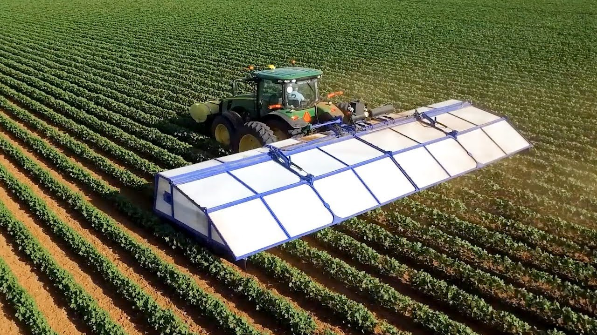
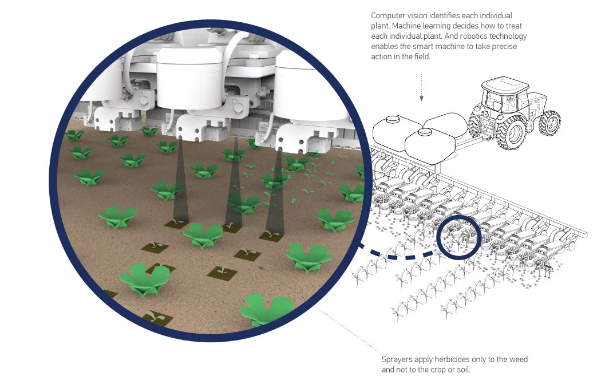

Agriculture is a field that is often revolutionized by the invention of new technologies. We saw this occur not too long ago with the widespread use of tools such as pesticides as well as tractors in farming. While those tools come with their own individual challenges they are now an integral part of the farming system and we would lose a significant part of the system if we were to lose these technologies and inventions. The Smart Farming Revolution is shaping up to be as big as these past revolutions if not bigger. Smart Farming allows farmers to reduce the usage of materials as well as reduce the need for human labor. Smart farming builds upon the tools from previous generations too, for example, there is a robot that is able to use vision software to detect plants, and use highly pressurized canisters of positives to deliver pesticides directly to the plant eliminating the need for systems where helicopters or airplanes deposit pesticides over field leading to mass runoff of the excess and eventually leading the ecosystem destruction with Algae Blooms and other such problems. Below is an image of this machine, the See and Spray, along with an image explaining how it functions.
 Image of the See and Spray a machine the utilizes machine learning to detetect weeds and delive accurate jets of pesticides into the ground  Slide ocvering how the See and Spray functionsTo achieve all of these benefits that come with smart farming requires the use of many machines and very complicated algorithms that all come at a high cost and once the machines have been created there is a need for constant internet connection so that data and be sent and stores and the individual parts of the machine can communicate with each other. The limited number of manufactures of such products also plays a role in their high cost of the consumers ( farmers ). Since this technology deals with data though it will only become better as more machines are out there collecting more data and as the machines get better more consumers ( farmers ) will adopt it and the cycle will continue.
I would like to propose that to encourage the use of Smart Farming technologies that governments provide subsidies to farmers to afford these technologies. And I would also like to propose that the government make research grants available for studying and developing technologies related to this field. Having the ability to produce more food and a lower cost is a prospect that would be quite beneficial for the economy of any ground and we know from our modules that when the government is able to support research into a specific field or idea then that field is able to advance farther in that time period than they would without the support of the government.
This legislation that would allow such grants to be possible would be similar to the Morril Acts of 1862 and 1890 that funded educational incisions by providing them land that they could then sell or utilize to establish “land-grant” colleges. These grants were provided to encourage the teaching of “practical agriculture, science, military science, and engineering” this was all done as a response to the industrial revolution. While the original Morril Act of 1862 provided educational incisions with swaths of land the later Morril Act of 1890 provided cash instead of land. I believe that we should follow a similar structure to the Morril Acts of 1890 and provide colleges with grant money to fund research focusing on agricultural research as it relates to data science and the internet of things. According to research done by SUNY, it was found that the land grant college system was a “major contributor in the faster growth rate of the US economy that led to its overtaking the United Kingdom as an economic superpower”. Recreating a system during a quite similar time in history would provide us with great economic benefits adding to the sustainability of Smart Farming according to Herket’s definition of Sustainability.
Finally, I propose that to ensure that the findings from this research are of benefit to all, the government ensures the findings from the research exist in the public domain and companies have the ability to take the research and create technologies based on them. The reason for this is to try and ward against the possibility of a monopoly being created in the smart farming sector. By placing these findings in the public domain we can ensure that larger companies with access to more money for R&D don’t have an extreme advantage and we can encourage competitiveness within the market.